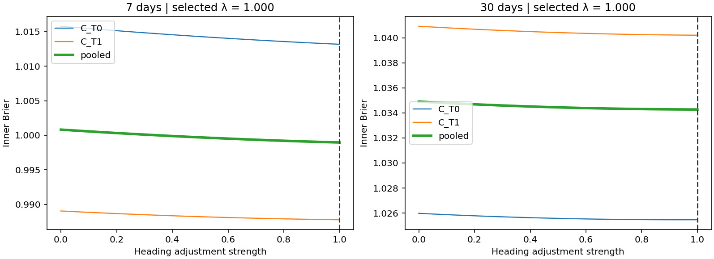
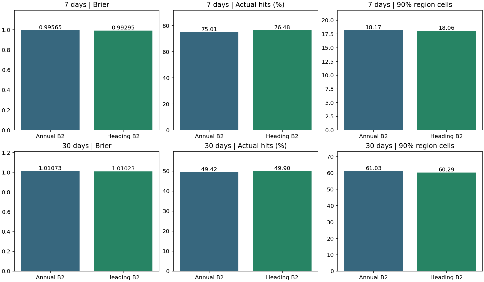
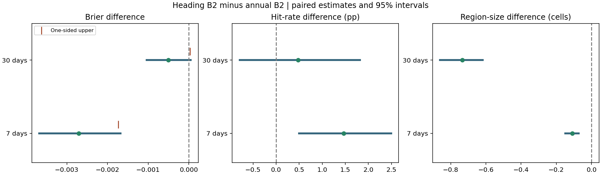
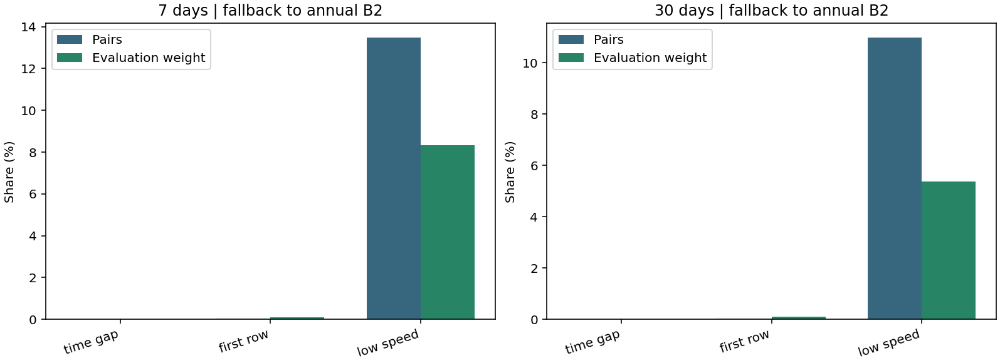

Use the hour ending at departure, with a fitting-only low-speed threshold. Both methods face identical 2020–2022 cases. The primary comparison is heading-adjusted minus annual Brier. Its corrected one-sided upper bound must be negative to support an improvement. Hits and region size qualify the operational trade-off.
7 days. The paired Brier test passes. Point-level quality preservation: True.
30 days. The paired Brier test does not pass. Point-level quality preservation: True.




| horizon_days | lambda_h | U | V | brier_annual | brier_full | brier_selected |
|---|---|---|---|---|---|---|
| 7 | 1.000000 | 0.000765 | 0.001312 | 1.000816 | 0.998956 | 0.998956 |
| 30 | 1.000000 | 0.000587 | 0.000610 | 1.034909 | 1.034276 | 1.034276 |
| horizon_days | model | brier | h90 | k90 | zero | exit | mass | pairs | ids | origins | eligible_pairs | unsupported_pairs | unsupported_weight | observed_exit | missing_donor_share |
|---|---|---|---|---|---|---|---|---|---|---|---|---|---|---|---|
| 7 | Annual | 0.995653 | 0.750145 | 18.166667 | 0.056900 | 0.000000 | 0.909978 | 33971 | 45 | 36 | 33971 | 0 | 0.000000 | 0.000000 | 0.114291 |
| 7 | Adjusted | 0.992948 | 0.764778 | 18.057034 | 0.056900 | 0.000000 | 0.908213 | 33971 | 45 | 36 | 33971 | 0 | 0.000000 | 0.000000 | 0.114291 |
| 30 | Annual | 1.010730 | 0.494218 | 61.028571 | 0.268564 | 0.000000 | 0.907310 | 30128 | 42 | 35 | 30128 | 0 | 0.000000 | 0.000000 | 0.099513 |
| 30 | Adjusted | 1.010227 | 0.499030 | 60.294477 | 0.268564 | 0.000000 | 0.902842 | 30128 | 42 | 35 | 30128 | 0 | 0.000000 | 0.000000 | 0.099513 |
| horizon_days | centered_upper | brier_supported | point_quality | delta_brier | brier_lower95 | brier_upper95 | delta_h90 | h90_lower95 | h90_upper95 | delta_k90 | k90_lower95 | k90_upper95 |
|---|---|---|---|---|---|---|---|---|---|---|---|---|
| 7 | -0.001733 | True | True | -0.002705 | -0.003677 | -0.001677 | 0.014633 | 0.004967 | 0.024946 | -0.109633 | -0.149381 | -0.072422 |
| 30 | 0.000027 | False | True | -0.000504 | -0.001035 | 0.000047 | 0.004812 | -0.007880 | 0.018218 | -0.734094 | -0.860550 | -0.618792 |
| horizon_days | reason | cases | case_fraction | weight | ids | origins |
|---|---|---|---|---|---|---|
| 7 | any_fallback | 4593 | 0.135204 | 0.084544 | 41 | 29 |
| 7 | query_unavailable | 4593 | 0.135204 | 0.084544 | 41 | 29 |
| 7 | no_usable_donors_independent | 0 | 0.000000 | 0.000000 | 0 | 0 |
| 7 | direction_used | 29378 | 0.864796 | 0.915456 | 45 | 35 |
| 7 | first_row | 9 | 0.000265 | 0.001110 | 9 | 6 |
| 7 | time_gap | 2 | 0.000059 | 0.000134 | 2 | 2 |
| 7 | position_quality | 0 | 0.000000 | 0.000000 | 0 | 0 |
| 7 | zero_speed | 0 | 0.000000 | 0.000000 | 0 | 0 |
| 7 | low_speed | 4582 | 0.134880 | 0.083300 | 39 | 29 |
| 7 | empty_usable_donor_row | 0 | 0.000000 | 0.000000 | 0 | 0 |
| 7 | no_positive_fit_speed | 0 | 0.000000 | 0.000000 | 0 | 0 |
| 30 | any_fallback | 3320 | 0.110196 | 0.055036 | 38 | 28 |
| 30 | query_unavailable | 3320 | 0.110196 | 0.055036 | 38 | 28 |
| 30 | no_usable_donors_independent | 0 | 0.000000 | 0.000000 | 0 | 0 |
| 30 | direction_used | 26808 | 0.889804 | 0.944964 | 42 | 35 |
| 30 | first_row | 8 | 0.000266 | 0.001134 | 8 | 5 |
| 30 | time_gap | 2 | 0.000066 | 0.000139 | 2 | 2 |
| 30 | position_quality | 0 | 0.000000 | 0.000000 | 0 | 0 |
| 30 | zero_speed | 0 | 0.000000 | 0.000000 | 0 | 0 |
| 30 | low_speed | 3310 | 0.109865 | 0.053763 | 36 | 28 |
| 30 | empty_usable_donor_row | 0 | 0.000000 | 0.000000 | 0 | 0 |
| 30 | no_positive_fit_speed | 0 | 0.000000 | 0.000000 | 0 | 0 |
| role | tau_m_s | unique_origins | positive_valid_speeds | usable_training_keys | low_speed_keys |
|---|---|---|---|---|---|
| C_T0 | 0.142474 | 170978 | 170941 | 153846 | 17095 |
| C_T1 | 0.144028 | 209934 | 209886 | 188897 | 20989 |
| C_outer | 0.140774 | 265393 | 265328 | 238795 | 26533 |